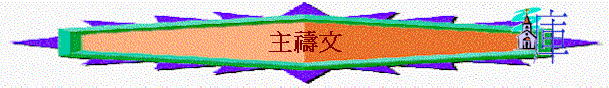

主禱文
＠──代表遊戲或活動或發問 ∼──代表講解
引起動機遊戲：
＠每人派一張字條，並各人寫下新一年/新學期的一個願望
〜以下在歷史中有幾位名人，他們也有願望，他們將自己的願望化為禱告，向神祈求
＠分組討論你最欣賞那一位的禱文，之後全組選出最欣賞的禱文，並派代表誦讀
〜引申世界中，很多人的禱告，也值得我們效法，但其中最偉大，最經典的禱文就是太6:9-13的主禱文
〜主禱文有甚麼經典的地方，從中我們可以學習怎樣向父神祈禱
一.先求神的事(太6:9-10)
＠貼出組員寫下的心願，統計及總結，他們的願望可能是多為自己著想
〜但主禱文的第一句是為神的國，神的名，神的旨意，不是為自己求，是先求神的事
〜「願人都尊祢的名為聖」----神的名就是神自己，願人都尊重神，人提起神的名字會有敬重及神聖感覺
〜「願祢的國臨降」----願神統治大地，祂的國及祂自己早日回來，而聖經說當得救的人添滿時，神回來的日子就到了
〜「願祢的旨意行在地上」----願人順服神的旨意，神的旨意在地上能成就如同在天上
二.再為自己求
1.日用的需要(太6:11)
＠分組討論6:11有甚麼特別及值得我們效法？
〜「我們」----不是為自己求，也為其他人
〜「日用」----不為明天憂慮，求今天的事
〜「飲食」----只為基本需要祈禱，有衣有食就滿足
2.與神的關係(太6:12)
＠用手勢表示你最近與神的關係
〜與神關係不好很多時候是因為罪，我們要求神免我們的債
〜我們也要先要饒恕其他得罪我們的人，否則天父也必不饒恕我們
3.靈界的爭戰(太6:13)
＠將團友名字寫在白板下，玩劃鬼腳遊戲，每團友有一次機會在白板上劃一條線，看最後魔鬼捉到那位組員
〜魔鬼就是那惡者，牠會用試探，兇惡攻擊我們，我們要求神幫我們不遇見試探與兇惡
＠團友選出主禱文中那一節在你平常的祈禱中多應用及呼求的，那一節最少
祈禱----用主禱文的真意，向神發出祈求